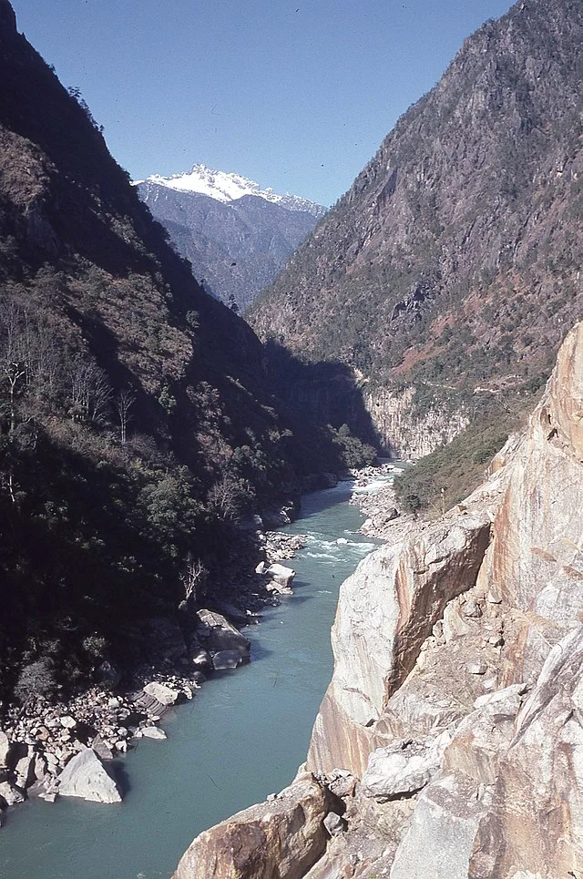
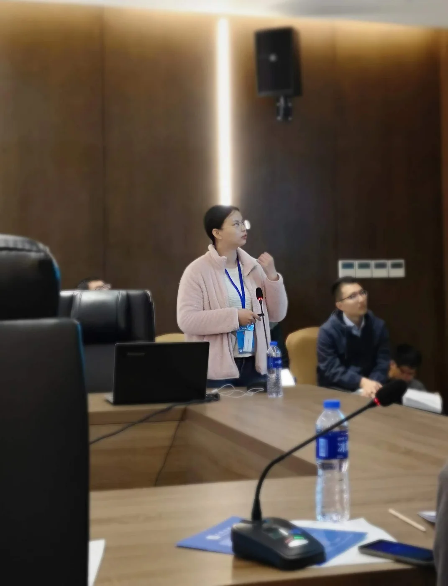

Long Time Scales, Sudden Ideas: Xianjun Fang, M.Sc., Earth Scientist

Xianjun Fang, M.Sc., is a doctoral student in the Earth Surface Dynamics group at ETH Zurich. She is part of the project Biodiversity, Earth, Climate Coupling in Yunnan (BECCY), a collaboration among ETH Zurich and four Chinese institutes, including Fang’s alma mater, Peking University. According to Fang, her work in the BECCY project seeks to identify “geomorphic and ecologic controls on hotspots of biodiversity” in the Hengduan Mountains of southwest China’s Yunnan province. She studies how landscapes change over geologic time scales (hundreds of thousands to millions of years).
Fang during field work in Yunnan.Integrating geology and biology means Fang has come full circle. She wanted to study biology originally, but it was not available when she applied to camps universities hosted for senior high school students. She chose geology due to its similarity to biology, taking the chance to “study creatures in ancient times.” Fortunately, she enjoyed “climbing mountains and observing rivers” in geology field camps. Fang earned high enough scores to attend Peking University, where she studied earth science and met Professor Jianqing Ji. Dr. Ji was her undergraduate thesis advisor as well as her Master’s supervisor, and encouraged her to pursue a PhD in Switzerland.

Fang’s doctoral research focuses on the Salween and Mekong Rivers. Here, the Salween River near Bingzhongluo, Yunnan, China. Photo by Michael Woodhead (Wikimedia Commons).Fang benefited from Dr. Ji’s collaborative research environment. In order to construct a database and mine data related to the ages of rocks, she and a classmate, Yujing, collected over 560,000 data points during a massive literature review. “It was tough, but she was patient and encouraged me,” says Fang. “Competition helped us to achieve quickly.” In addition to taking inspiration from teamwork, she recommends that students be passionate and patient. “Do basic things first, and read a lot of papers,” she advises. “Accumulate knowledge and achievements at the end.”
“The ability to learn is the most important skill” for success in Earth sciences, says Fang, followed closely by coding and computer skills. “[In China], traditional geology is not so popular [anymore]. Everyone wants to apply machine learning.” In her work, she uses computer programs like ArcGIS and languages like MATLAB and Python. Having used machine learning in her Master’s research, she predicts it will “improve in the future, in order to address geology problems.”

Fang presenting her research at an academic meeting.Perseverance is also important for Fang, since the publication process can be challenging. During her master’s, she submitted a manuscript to a journal and received major revisions and “really mean” comments from reviewers. She had to revise her manuscript for months and add extra data analysis while isolating in her home village with her parents and grandmother due to the COVID-19 pandemic. “It was time-sensitive to solve these problems and publish the paper,” she says. “I thought about it all the time.”
Solving problems after a sustained effort is the most rewarding part of research for Fang: “when you think for a long time, then suddenly have the ideas.” In terms of the broader impact of her research, she hopes the public will understand that “the environment, including geomorphology and climate, impacts the activities of creatures, including humans: earth science is an important subject.”
*Thank you to Xianjun Fang, M.S., for sharing her story with 500WS Bern-Fribourg. Clickhereto find out more about her experience.
Gabrielle Vance
M.Sc. Geology
From the 500 Women Scientists Bern-Fribourg archive. Originally published 30 April 2022.
Explore more stories